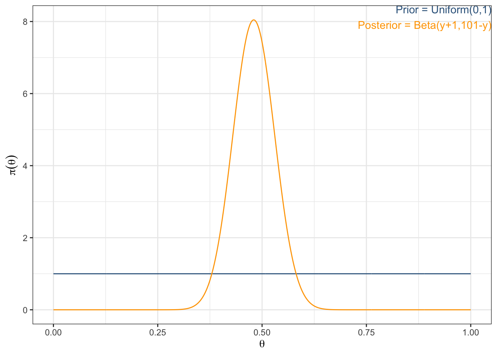
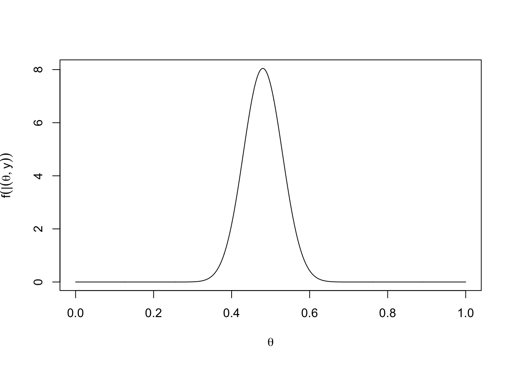

Setup
Experiment: we toss a coin 100 times and count the number of “heads” among the 100 tosses.
Now, suppose the chance of having a “head” in such a toss is 0.50 for a particular coin. Let’s simulate the 100 tosses and analyze the outcome using Bayesian!
The goal of this first lab will be:
- Become familiar with R and RStudio - Practice with vector in R - Begin to explore simulation study in R - Use computational tools to find the Bayesian point estimate and interval estimate
Step 1 – Single experiment
Simulate the outcomes of the 100 tosses.
Step 2 – Response
Find the number of “heads” and plug that into the posterior distribution of the parameter.
# count the number of heads
y <- sum(data_experiment == 1)# alternatively we could directly simulate the number of heads out of 100
y <- rbinom(n = 1, size = 100, prob = 0.5)As shown in the Chapter 1 and in Chapter 3, \(\theta \mid y \sim \text{Beta}(y + 1, 101 - y)\) with prior \(\theta \sim \text{Uniform}(0,1)\).
# compare the prior distribution and the posterior distribution
ggplot() +
geom_line(aes(x = seq(from = 0, to = 1, by = 0.001),
y = dunif(seq(from = 0, to = 1, by = 0.001), min = 0, max = 1)),
color = "steelblue4") +
geom_line(aes(x = seq(from = 0, to = 1, by = 0.001),
y = dbeta(seq(from = 0, to = 1, by = 0.001), shape1 = y+1, shape2 = 101-y)),
color = "orange") +
annotate("text",
x = Inf, y = Inf,
hjust = 1, vjust = 1,
label = "Prior = Uniform(0,1)",
color = "steelblue4") +
annotate("text",
x = Inf, y = Inf,
hjust = 1, vjust = 3,
label = "Posterior = Beta(y+1,101-y)",
color = "orange") +
labs(x = expression(theta),
y = expression(pi(theta)))
Step 3 – Frequentist point estimate
Find the point estimate of the parameter using frequentist approach (relative frequency of the “head” among 100 tosses).
# calculate frequentist point estimate p-hat = x / n
(pe_freq <- y / 100)[1] 0.48Step 4 – Frequentist confidence interval
Find the 95% interval estimate of the parameter using frequentist approach (approximate z-CI of the population proportion):
\(\hat{p} \pm Z_{\alpha/2} \sqrt{\frac{(\hat{p}(1 - \hat{p})}{n}}\)
# calculate 95% confidence interval
pe_freq + c(-1, 1) * qnorm(0.975) * sqrt(pe_freq * (1 - pe_freq) / 100)[1] 0.3820802 0.5779198More choices of modified frequentist PE’s available from package binom in R.
# calculate other frequentist confidence intervals
binom::binom.confint(x = y, n = 100, conf.level = 0.95)Note that our manual calculation matches the ‘asymptotic’ interval from above.
Step 5 – Bayes’ point estimate
Based on the resulting posterior distribution, find the point estimate of the parameter.
Note that \(E(\theta \mid y) = \frac{\alpha}{\alpha + \beta} = \frac{y + 1}{(y + 1) + (101 - y)} = \frac{y + 1}{102}\).
# calculate bayes point estimate
# -> posterior mean
(pe_bayes_mean <- (y + 1) / 102)[1] 0.4803922# -> posterior median
(pe_bayes_median <- qbeta(0.5, shape1 = y + 1, shape2 = 101 - y))[1] 0.4802635# -> posterior mode
# --> one method
theta <- seq(from = 0, to = 1, by = 0.001)
d_posterior <- dbeta(theta, shape1 = y + 1, shape2 = 101 - y)
plot(x = theta, y = d_posterior, type = "l", xlab = expression(theta), ylab = expression(f(theta|y))) # unimodal
(pe_bayes_mode <- theta[which.max(d_posterior)])[1] 0.48# --> another method
f_x_beta <- function(x, y) {
dbeta(x, shape1 = y + 1, shape2 = 101 - y)
}
optimize(f = f_x_beta, interval = c(0,1), y = y, maximum = TRUE)$maximum
[1] 0.4799847
$objective
[1] 8.044908Step 6 – Bayes’ Interval
Based on the resulting posterior distribution, find the 95% interval estimate of the parameter.
[1] 0.3844742 0.5770388# -> HPD interval
TeachingDemos::hpd(qbeta, shape1 = y + 1, shape2 = 101- y, conf = 0.95)[1] 0.3842179 0.5767799Note these don’t match the ‘bayes’ interval from binom.confint() because it is using a prior \(\theta \sim \text{Beta}(\alpha =0.5, \beta = 0.5)\).
Also note that the HPD interval function is not a general way of finding the HPD credible intervals because it is limited to the case when we know the inverse CDF function (i.e. q<dist>()) of the posterior distributions and it is not always tractable.
The following code gives a general way of doing it, in which the “ruler” data object is basically the horizontal line segment that will be “dropped” onto the posterior density and we try to find such a “ruler” that will exactly gives HPD area of \(1 − \alpha\).
Step 7 – General HPD interval
Below we implement a general search procedure for finding the parameter values that correspond to the HPD interval. We just need to have the cdf of the posterior density rather than the inverse cdf like in TeachingDemos::hpd().
# HPD calculation (more general approach)
# specify parameter values and corresponding posterior density values (rounded to 2 decimal places so can check equality later)
theta <- seq(from = 0, to = 1, length = 5000)
d_posterior <- dbeta(theta, shape1 = y+1, shape2= 101-y) %>% round(2)
# specify target -> the desired coverage probability level for the interval
# specify tolerance -> variation in the desired coverage probability for the numerical search of
# -> number chosen according to the precision (decimal places) of the posterior density function values found above
target <- 0.95
tol <- 0.005
# loop to find HPD interval
# initialize values
# -> indicator of when search is done
# -> start counter at an index for lower bound -> starting in the middle and working outwards (to find the narrowest instance in which HPD criteria is met)
interval_found <- FALSE
i <- length(theta)/2
while (i > 0 & !interval_found) { # continue searching lower bounds across all parameter values or until desired interval is found
# initialize starting index for the upper bound
j <- length(theta)/2
# search across parameter values for the upper bound
while (j <= length(theta) & !interval_found){
# check if the upper bound has an equivalent density height to the lower bound
if (d_posterior[i] == d_posterior[j]){
# calculate needed values for coverage probability using cdf
F_lower <- pbeta(theta[i], shape1 = y+1, shape2= 101-y)
F_upper <- pbeta(theta[j], shape1 = y+1, shape2= 101-y)
# evaluate coverage probability and check if: F(upper) - F(lower) = target +- tolerance
if (between(F_upper - F_lower, target - tol, target + tol)) {
interval_found <- TRUE
}
}
# increase upper bound
j <- j+1
}
# decrease lower bound (working inside out)
# -> and start over with the upper bounds
i <- i-1
}
# posterior density value corresponding to the HPD region boundaries
(k <- d_posterior[i])[1] 1.3# HPD
bound_lower_hpd <- theta[i]
bound_upper_hpd <- theta[j]
paste0("Index of ", target*100, "% HPD interval boundaries: ", "i = ", i, " and j = ", j)[1] "Index of 95% HPD interval boundaries: i = 1930 and j = 2875"paste0(target*100, "% HPD interval: [", round(bound_lower_hpd, 3), ", ", round(bound_upper_hpd, 3), "]")[1] "95% HPD interval: [0.386, 0.575]"Step 8 – Simulation
Repeat the simulation of data and analysis steps 1-6 for 50 times, record all the analysis outcomes.
# define function to calculate everything (95% confidence)
# -> freq: p-hat = x / n, asymptotic interval estimates
# -> bayes: posterior mean, equal tails interval estimates
calc_values <- function(y) {
data.frame(y = y) %>%
mutate(
pe_freq = y / 100,
bound_lower_freq = pe_freq - qnorm(0.975) * sqrt(pe_freq * (1 - pe_freq) / 100),
bound_upper_freq = pe_freq + qnorm(0.975) * sqrt(pe_freq * (1 - pe_freq) / 100),
pe_bayes = (y + 1) / 102,
bound_lower_bayes = qbeta(p = 0.025, shape1 = y+1, shape2 = 101-y),
bound_upper_bayes = qbeta(p = 0.975, shape1 = y+1, shape2 = 101-y)
)
}
# simulate the number of heads many times
y <- rbinom(n = 50, size = 100, prob = 0.5)
# run simulation
results <- y %>%
map(\(y_i) calc_values(y_i)) %>%
reduce(bind_rows) %>%
mutate(i = row_number(),
.before = 1)
results %>% round(3) %>% head